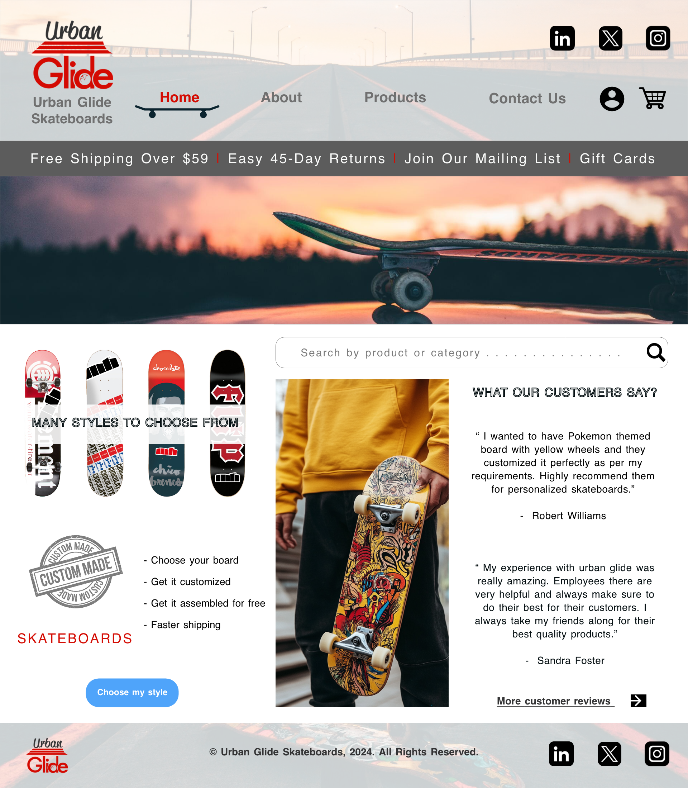
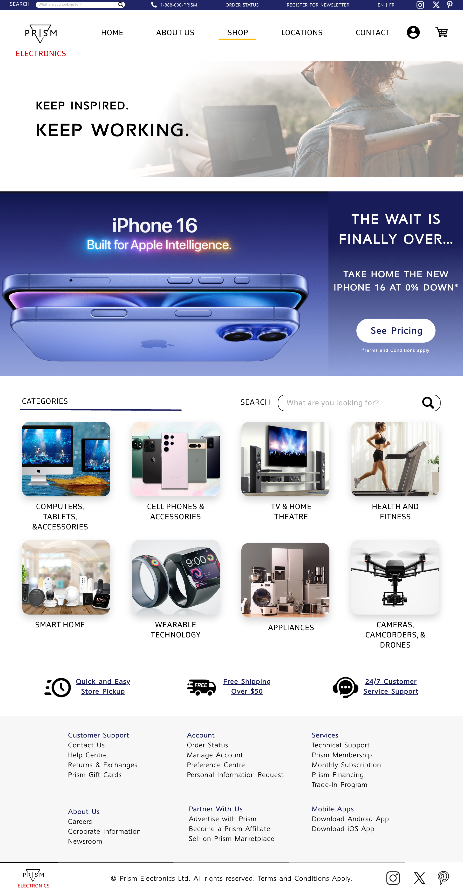
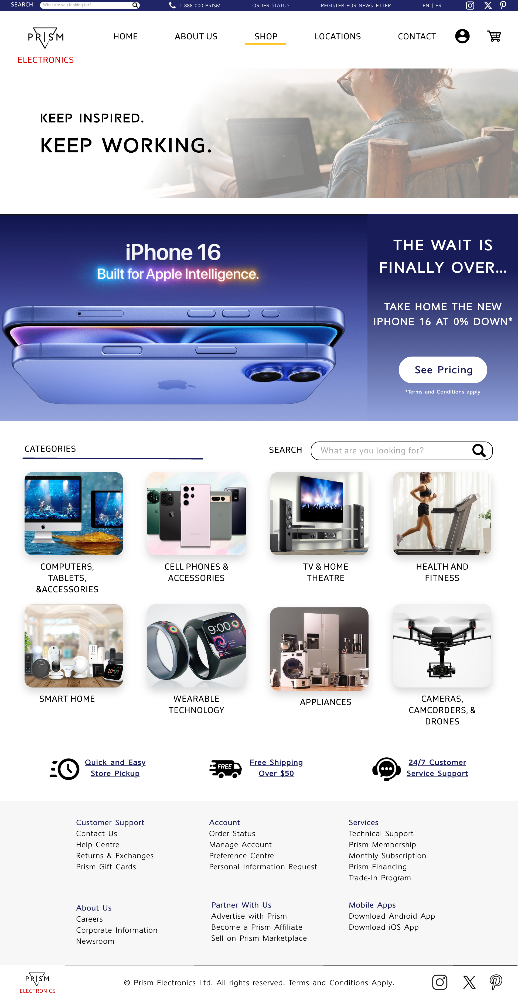

UX/UI DESIGNER AND WEB DEVELOPER
Hello! I’m Raveena, an aspiring UX/UI designer and web developer with a passion for creating engaging, user-centered digital experiences. My journey into design and development started with a fascination for how intuitive interfaces can elevate user satisfaction and make complex tasks feel effortless. With a growing skill set in tools like Adobe Illustrator, Adobe Photoshop, Adobe XD, HTML, CSS, and JavaScript, I enjoy translating user needs into seamless, visually compelling designs. I’m always looking for ways to improve my skills and stay current with industry trends, whether through online courses, hands-on projects, or collaborating with others in the field.
Develop a Strong Portfolio: Build a comprehensive portfolio that showcases a range of projects, including both UX/UI design and web development work, to attract potential clients and employers. Aim to complete at least 2-3 standout projects per year, demonstrating a variety of styles and solutions.
Master Advanced Design and Coding Skills: Deepen my expertise in industry-standard tools (Adobe XD, Photoshop, Illustrator) and front-end technologies (like HTML, CSS, JavaScript, and frameworks like React or JS). This could include setting a goal to earn relevant certifications or complete advanced courses.
Stay Ahead of Design Trends: Regularly explore current trends and emerging technologies in UX/UI and front-end development. Experiment with new tools or techniques, setting aside time for learning and innovation each month.
Mentor or Teach Others in the Field: Once I'm more established, I would like to consider mentoring junior designers or writing tutorials. Sharing knowledge will reinforce my skills and build a reputation as an authority in the field.
Click on the image to view a project in full.

 
